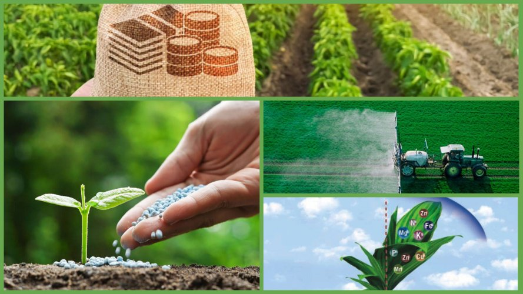

На цій сторінці ми розповідаємо про мінеральні добрива для троянд та інших садових рослин. Правильне підживлення — це основа довгого цвітіння.

Наші поради базуються на багаторічному досвіді, про який ви можете прочитати в розділі про нашу історію. Також рекомендуємо зазирнути в блог, де ми розбираємо типові помилки садівників.
Якщо ви хочете побачити результати застосування цих засобів, перегляньте нашу галерею свіжих букетів.